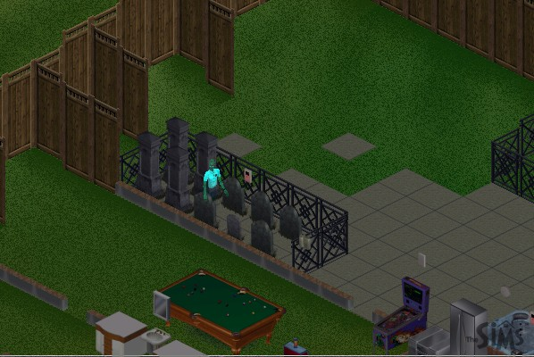
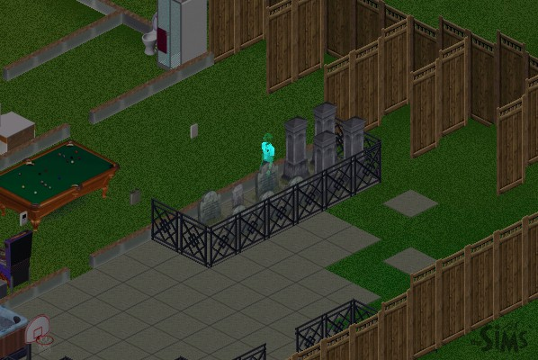
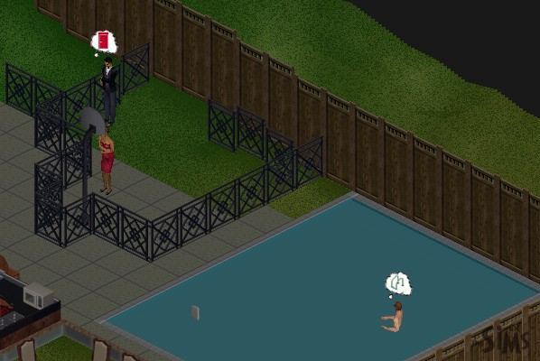
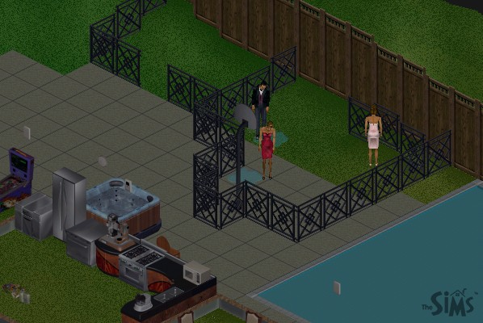
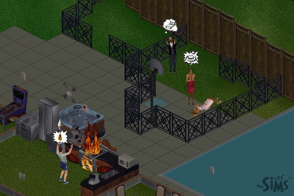

|
The Death of The Sims Part 3
 |
One of the downsides of having lots of graves around: lots of ghosts. This is actually the ghost of the husband in my first family, the one meant to represent me. |
 |
It's really great how you can change to multiple angles in the game. I took two shots, partially out of vanity, partially because it's the first time I'd caught a ghost on film. |
 |
Now, I was starting to get bored with the cage. So I invited a neighbor into the pool and then took the ladders away. Once again, he expresses what's wrong very well. The programmers HAD to know someone would do that. |
 |
Now, you're probably wondering where all the adults are coming from, since I said he ran out of them. Well, there are many template families that come with the game, many of which aren't assigned to a house. So I put them in the now empty houses, and invited them over! |
 |
One interesting part of the game is that if you don't teach your Sim to cook by making him read a book on it, he will set the stove on fire sometimes. Well, he also won't read if he's depressed, and he's depressed if he doesn't have any friends (because they're all dead). |
Next Page
darkmage@gmail.com
All images and content are ©2000 Jason L. Snowden or
copyrighted by their respective companies
|